Interactive Figures
A finished chart answers the question it was drawn for; the next question is usually about one mark on it. Which point is that outlier? What was the value in that quarter? Is that the p99 line or the p50? Labelling every mark would bury the chart, so the answer is to ask the figure while it is on screen. Every figure datachart returns is static until shown: figure.show() renders it inline in a notebook and opens a GUI window in a script. Pass interactive=True to show() to zoom, pan, and hover over the marks instead. The flag is the only switch: the chart functions, Panel, Grid, and the config know nothing about it, and a figure shown the default way is byte-for-byte unchanged. This guide shows what the interactive view offers, starting with the basics and building up to worked examples.
Looking for a specific task? Jump straight to the quick reference, which maps common questions to the gesture that answers them.
Basics
The same figure, shown twice: once as the static image the notebook always shows, once on an interactive canvas. Nothing about the chart changes between the two calls.
from datachart.charts import LineChart
figure = LineChart(
data=[{"x": i, "y": i**2} for i in range(10)],
subtitle="growth",
xlabel="Step",
ylabel="Value",
)
figure.show() # the static image
figure.show(interactive=True) # zoom, pan, and hover
The figure above, shown in a notebook, hovered and zoomed:
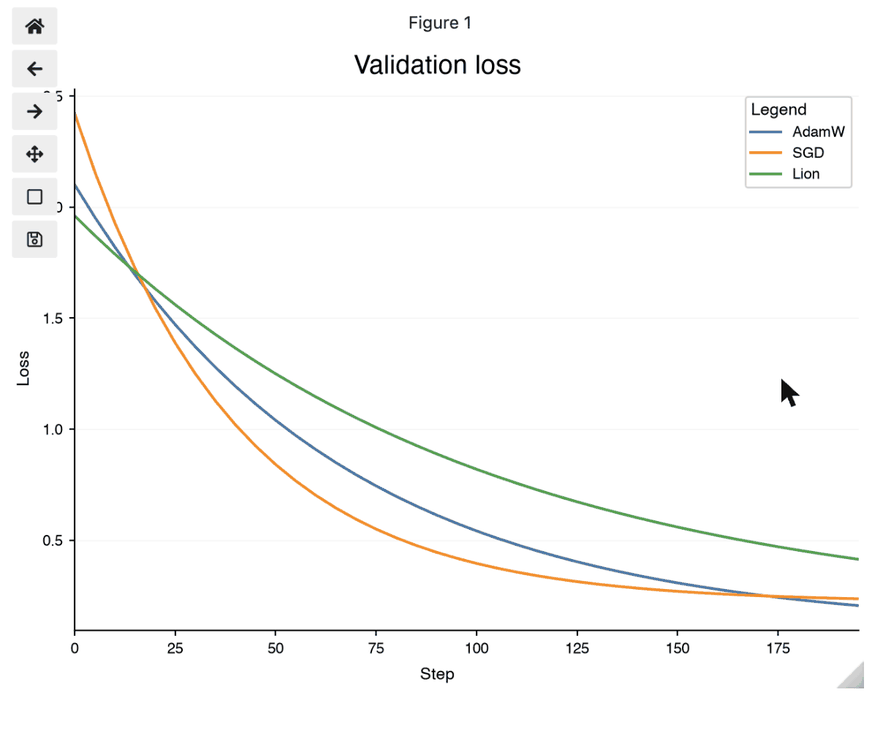
The recording is static because the documentation site has no Python kernel behind it; run the snippet in a notebook to get the live widget.
Installing the extra
Interactivity needs two optional packages, ipympl for the notebook widget canvas and mplcursors for the hover annotations. Install them with the interactive extra:
Without them show(interactive=True) raises an ImportError naming the missing package and the extra. It never falls back to a static figure.
The Interactive View
The view offers three gestures, and each answers a different question about the chart.
| I want to… | Do | See |
|---|---|---|
| look closely at a crowded region | zoom to a rectangle, pan, step back | Zoom and pan |
| read the value behind one mark | hover it | Hover to inspect |
| know what a chart's hover annotation shows | the per-chart table | What each chart reports |
| inspect a panel's secondary axis or a grid cell | hover as on a single chart | Hover follows composition |
| keep the figure as an image after inspecting it | save_figure |
Saving Figures |
Zoom and pan
What is going on in that corner? Points overplot, lines cross, and the interesting part of a chart is often a tenth of its width. Zooming to a rectangle magnifies it without redrawing the chart with new limits, and stepping back restores the whole view.
- Notebooks. The figure is displayed on an
ipymplwidget canvas with the matplotlib toolbar: zoom to a rectangle, pan, step back through views, and save. The widget takes the place of the static image, so nothing is displayed twice. - Scripts. The figure opens in the GUI window it always did; the window's own toolbar provides the zoom and pan.
Hover to inspect
What is this mark, exactly? Hovering a mark shows an annotation with the series' legend label on the first line (its subtitle, or the legend_label a Panel assigned) and one name: value line per field of the mark. A mark that stands for a data point reports its axis coordinates: the names are the axis labels of the chart when set (xlabel, ylabel, and a Panel's ylabel_left / ylabel_right), and x / y otherwise; a series on a Panel's secondary value axis reports the secondary label. Values are formatted the way the axis formats its coordinates, so a point on a category axis reports the category name and a point on a date axis reports the date. A mark that stands for an aggregate reports its summary under plain names: a box its median and quartiles, a histogram bin its range and count, a sankey link its endpoints and flow. The annotation wears the theme's text annotation style (the plot_text_* font, box, and connector), so it matches the figure it sits on.
Every chart type has hover support. Filled marks (bars, bands, boxes, bodies, cells, hexagons, tiles, nodes, ribbons) pick anywhere inside; lines, outlines, and network edges pick within a few points of their stroke, as do the outline of a step histogram and the edges of a filled contour band. Text annotations and reference lines decorate the chart and carry no hover.
Hover follows composition
Does it still work once charts are combined? Hover follows the marks through composition: it works on every series of a Panel overlay, including those on the secondary axis, which report the panel's right axis label, and in every cell of a Grid, where each cell's marks report that cell's labels. A figure composed from figures keeps the hover of each.
What each chart reports
The table lists, per chart, the mark that is picked and what its annotation shows; the gallery below it shows the annotation on each chart.
| Chart | Mark | Annotation |
|---|---|---|
| Line Chart | line point | legend label, x, y |
| Stacked Area Chart | band, at the nearest point | legend label, x, the series' own y (never the stack total) |
| Bump Chart | line, at the nearest period | legend label, x, the rank as y, the original value |
| Bar Chart | bar | legend label, category, the bar's own value (never the stack total) |
| Pyramid Chart | bar | legend label, category, the value as passed, positive |
| Gantt Chart | task bar | legend label, task, start, end, duration in days, and progress when set |
| Dumbbell Chart | start or end dot | legend label (the endpoint name), category, value |
| Radial Chart | point, bar, or bin | legend label, angle (the category, or a bin's degree range), radius |
| Histogram | bin | legend label, the bin's range, its count (or density) |
| Box Plot | box | legend label, category, median, q1, q3, min, max |
| Violin Plot | body | legend label (or the split value), category, median, q1, q3, min, max |
| Swarm Plot | point | legend label, category, value |
| Raincloud Plot | box, body, or rain point | as the box, violin, and swarm marks |
| Ridgeline Plot | ridge | legend label, category, median, q1, q3, min, max |
| Scatter Chart | point | legend label (or the hue group), x, y |
| Heatmap | cell | legend label, x, y, value |
| Calendar Heatmap | day cell | legend label, date, value |
| Contour Chart | level line or filled band | legend label, level (a band's two levels) |
| Hexbin Chart | hexagon | legend label, x, y (the cell center), count (or the reduced c under its reducer's name) |
| Parallel Coordinates | row line, at the nearest axis | the hue value (or the legend label), the axis name and the row's value there |
| Network Chart | node or edge | node: its label, degree (in / out when directed, the weight sum when weighted), its group and size when given; edge: source, target, weight |
| Scatter Matrix | point, bin, or density curve | as the scatter chart and histogram marks; a density curve reports the legend label (the hue group), x, and the density as y |
| Sankey Chart | node or link | node: its name, flow; link: source, target, flow |
| Treemap | tile or group band | its label, value (a band's group total) |
The annotation on each chart, from the figure shown with show(interactive=True) and a mark hovered:
| Line Chart — a hovered point | Stacked Area Chart — a hovered band |
|---|---|
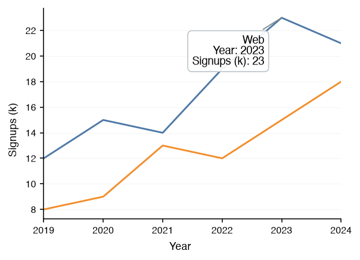 |
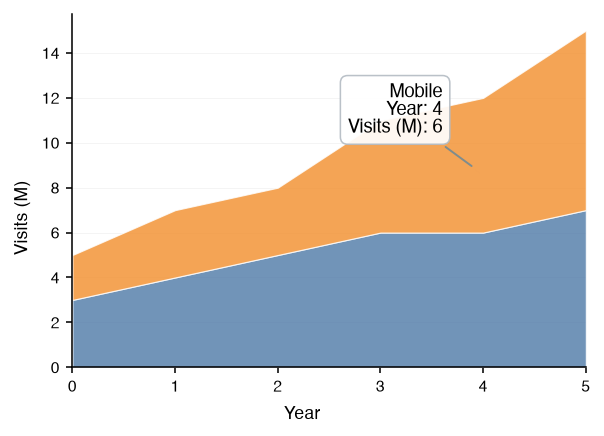 |
| Bump Chart — a hovered period | Bar Chart — a hovered bar |
|---|---|
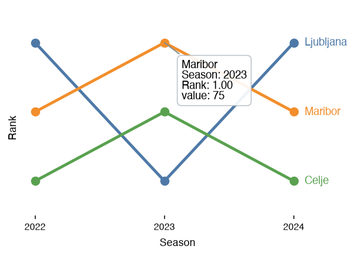 |
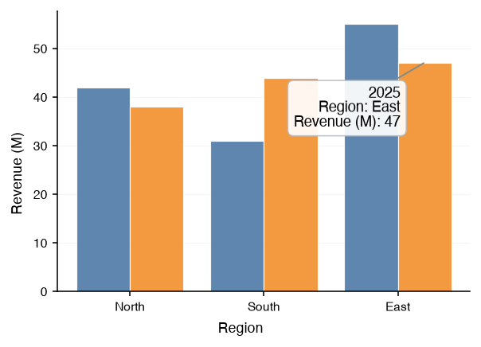 |
| Pyramid Chart — a hovered bar | Gantt Chart — a hovered task bar |
|---|---|
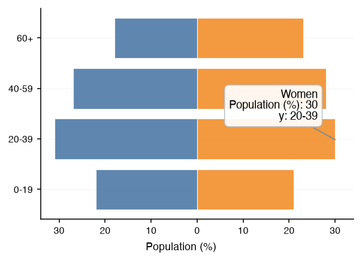 |
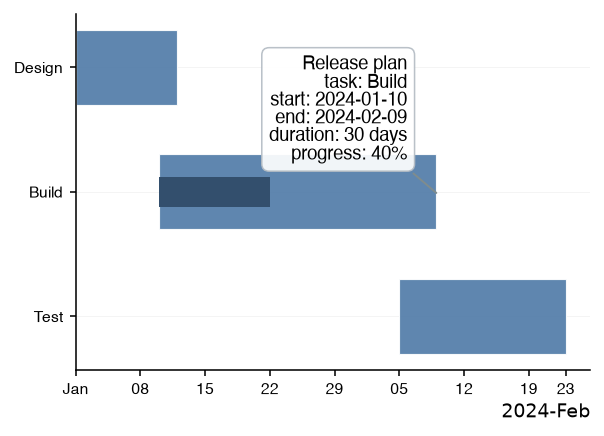 |
| Dumbbell Chart — a hovered start dot | Radial Chart — a hovered bar |
|---|---|
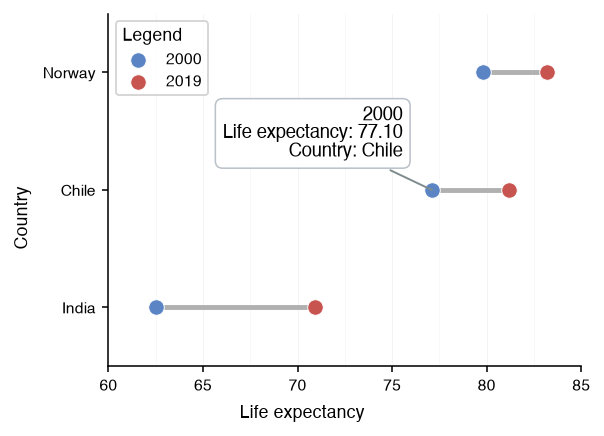 |
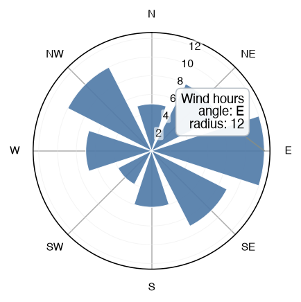 |
| Histogram — a hovered bin | Box Plot — a hovered box |
|---|---|
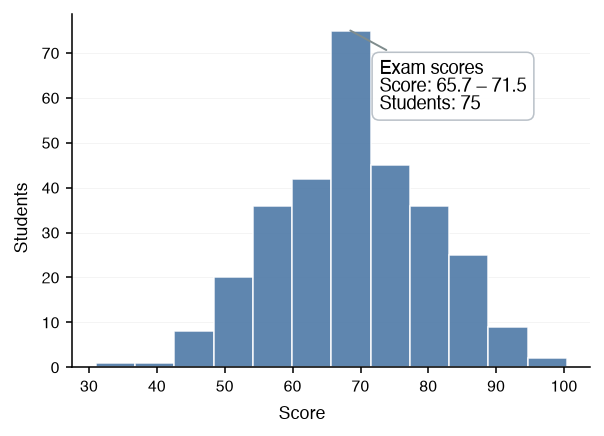 |
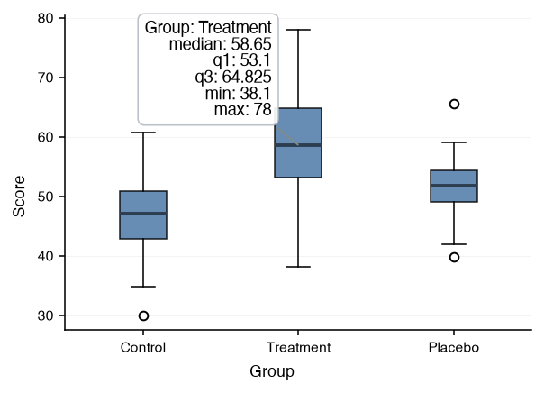 |
| Violin Plot — a hovered body | Swarm Plot — a hovered point |
|---|---|
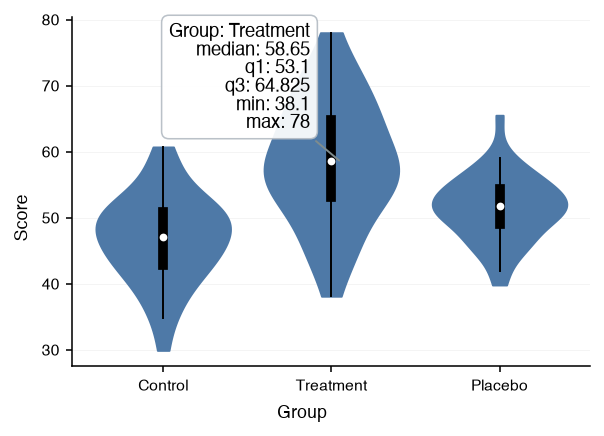 |
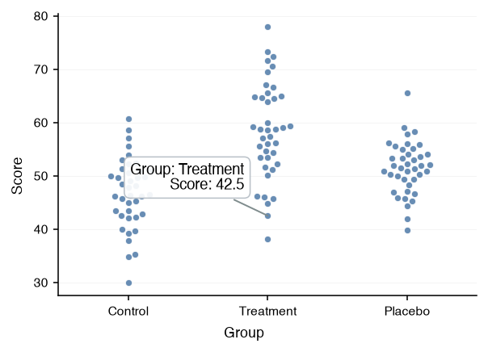 |
| Raincloud Plot — a hovered box | Ridgeline Plot — a hovered ridge |
|---|---|
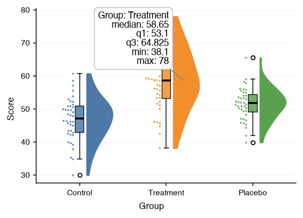 |
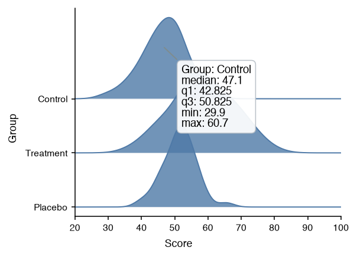 |
| Scatter Chart — a hovered point | Heatmap — a hovered cell |
|---|---|
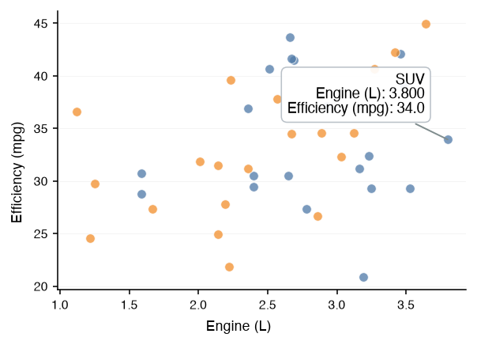 |
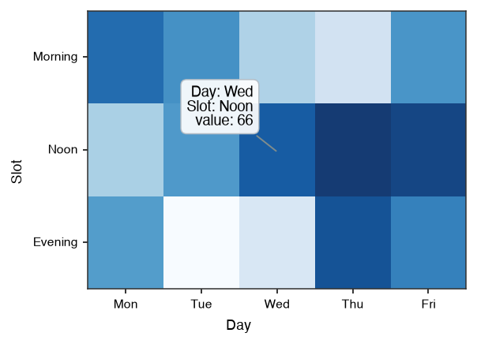 |
| Calendar Heatmap — a hovered day | Contour Chart — a hovered level line |
|---|---|
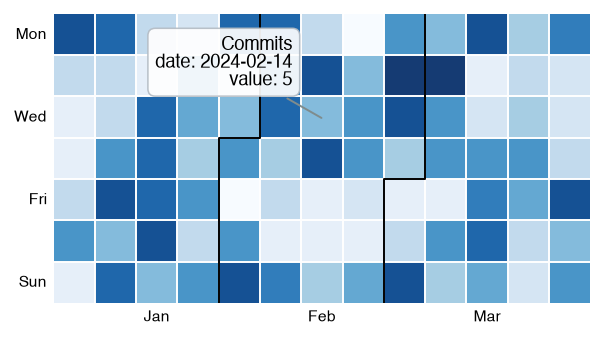 |
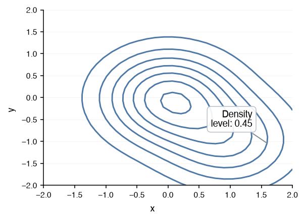 |
| Hexbin Chart — a hovered hexagon | Parallel Coordinates — a hovered row |
|---|---|
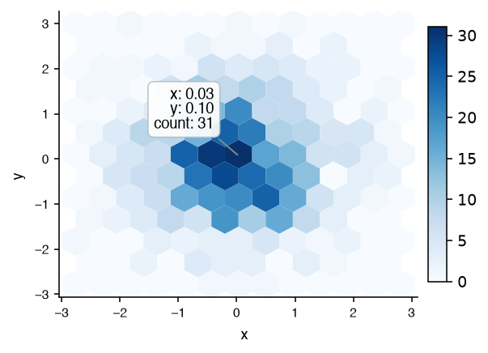 |
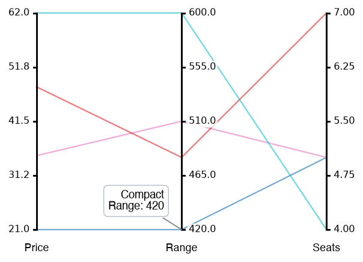 |
| Network Chart — a hovered node | Scatter Matrix — a hovered point |
|---|---|
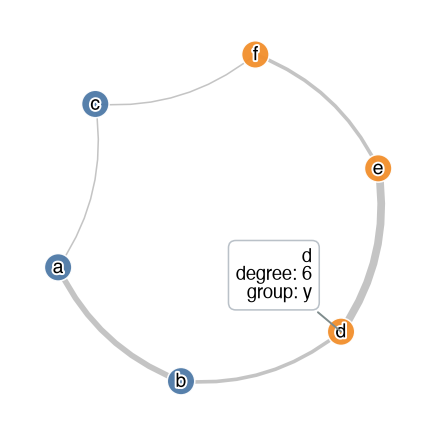 |
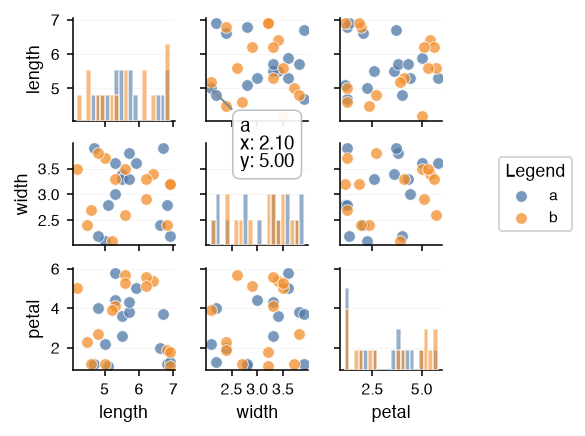 |
| Sankey Chart — a hovered link | Treemap — a hovered tile |
|---|---|
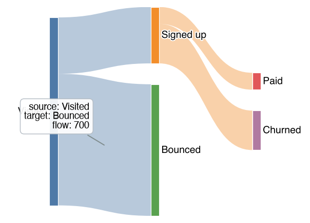 |
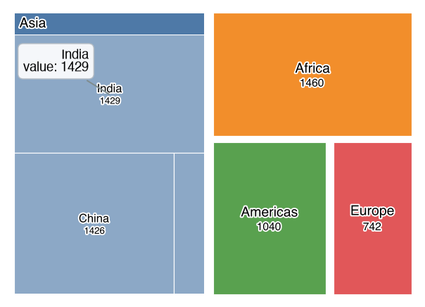 |
Real-World Examples
The examples below are the three questions the interactive view is opened for most often. Each is a snippet to run in a notebook with the interactive extra installed; the site cannot run them, so they are shown as code.
Example 1: Which Country Is the Outlier? (Hover on a Grouped Scatter)
A scatter of GDP per capita against life expectancy has one point far below the trend, and the chart is not the place to name every country. Group the points with hue so the annotation's first line is the region, keep the axis labels descriptive so the coordinates come back under readable names, and hover the stray point: it reports its region, its GDP and its life expectancy, which is enough to find it in the data.
from datachart.charts import ScatterChart
figure = ScatterChart(
data=countries, # {"x": gdp, "y": life_expectancy, "region": ...} per country
hue="region",
xlabel="GDP per capita (USD)",
ylabel="Life expectancy (years)",
scalex="log",
show_legend=True,
)
figure.show(interactive=True)
# hovering the low point shows, for example:
# Africa
# GDP per capita (USD): 3,200
# Life expectancy (years): 63.1
For an outlier that should stay named on the static chart too, add a texts note once it is identified; the Text Annotations guide shows how.
Example 2: Which Axis Is That Line On? (Hover in a Two-Axis Panel)
A Panel that overlays a count on a rate puts one series on each value axis, and a reader who zooms in loses track of which is which. Hovering settles it: a series on the secondary axis reports its value under the panel's ylabel_right, one on the primary axis under ylabel_left. The legend label on the first line names the series.
from datachart.charts import BarChart, LineChart
from datachart.utils import Panel
figure = Panel(
[
BarChart(data=monthly_orders, subtitle="Orders"),
LineChart(data=monthly_return_rate, subtitle="Return rate"),
],
xlabel="Month",
ylabel_left="Orders",
ylabel_right="Return rate (%)",
show_legend=True,
)
figure.show(interactive=True)
# hovering the line shows: hovering a bar shows:
# Return rate Orders
# Month: Mar Month: Mar
# Return rate (%): 4.2 Orders: 1,180
Example 3: Is Every Cell Right? (Zoom and Hover across a Grid)
A Grid of a dozen small multiples is drawn to be scanned, not read, and a cell that looks off needs checking before the figure is shared. The interactive view is the check: zoom to the cell to see it at full size, hover its marks to read the values under that cell's own labels, then step back to the whole grid. Nothing has to be redrawn, and the figure saved afterwards with save_figure is the unchanged static one.
from datachart.charts import LineChart
from datachart.utils import Grid, save_figure
cells = [
LineChart(data=series, title=station, xlabel="Year", ylabel="Rainfall (mm)")
for station, series in rainfall_by_station.items()
]
figure = Grid(cells, max_cols=4, sharey=True)
figure.show(interactive=True) # zoom into a cell, hover its points
save_figure(figure, "rainfall_grid.pdf") # the static figure, unchanged by the inspection